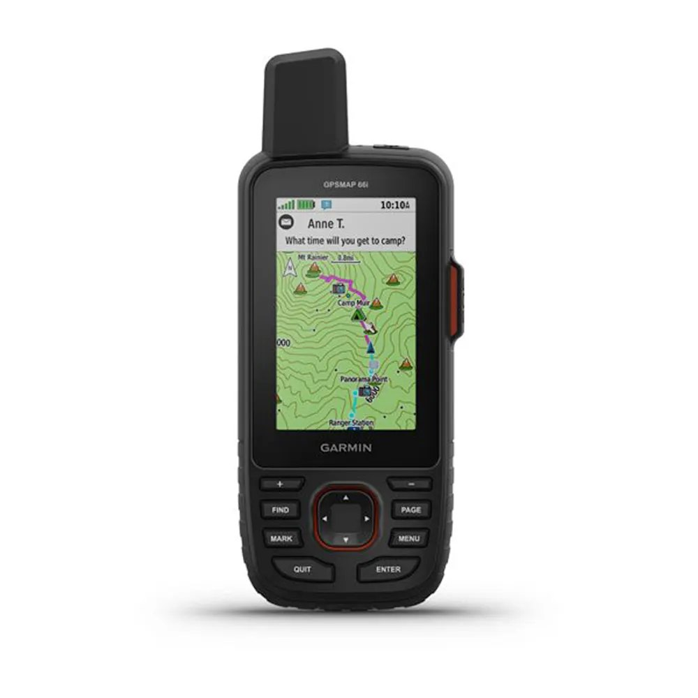
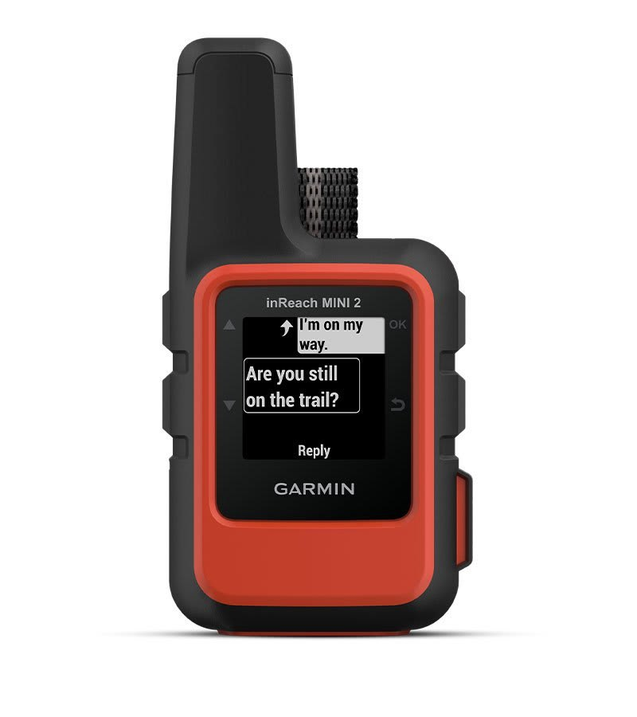
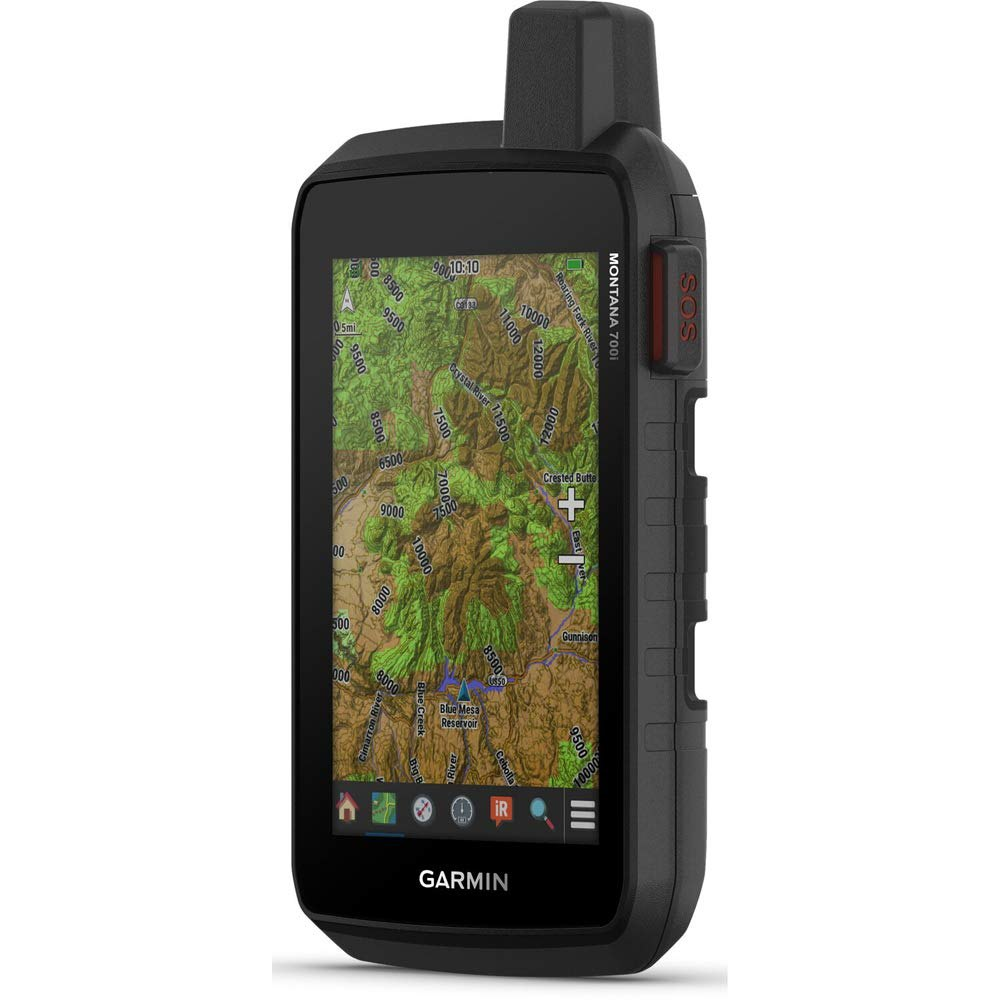
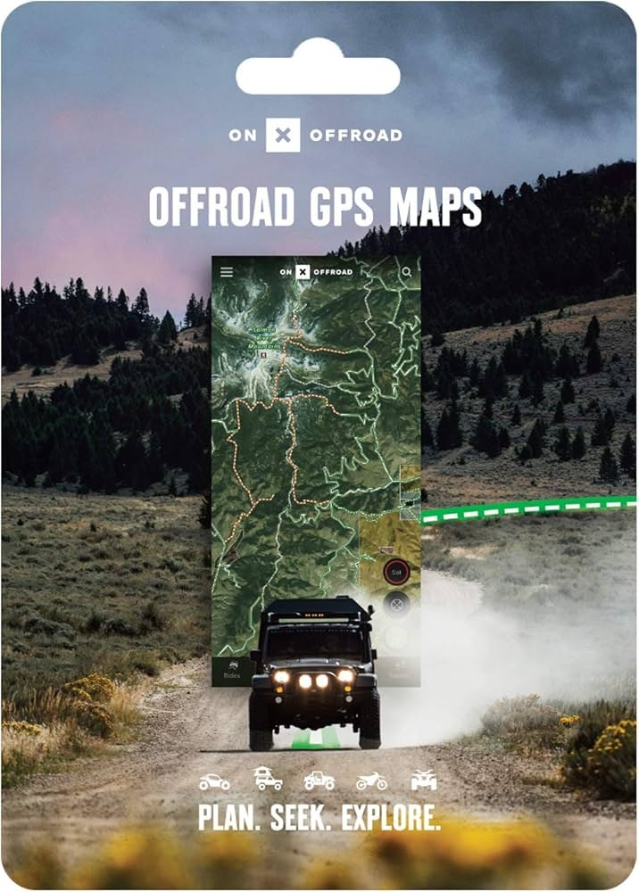
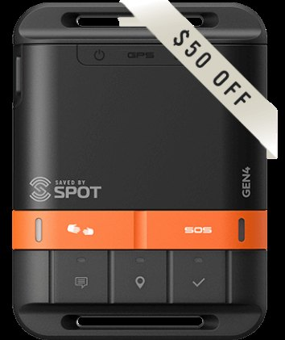
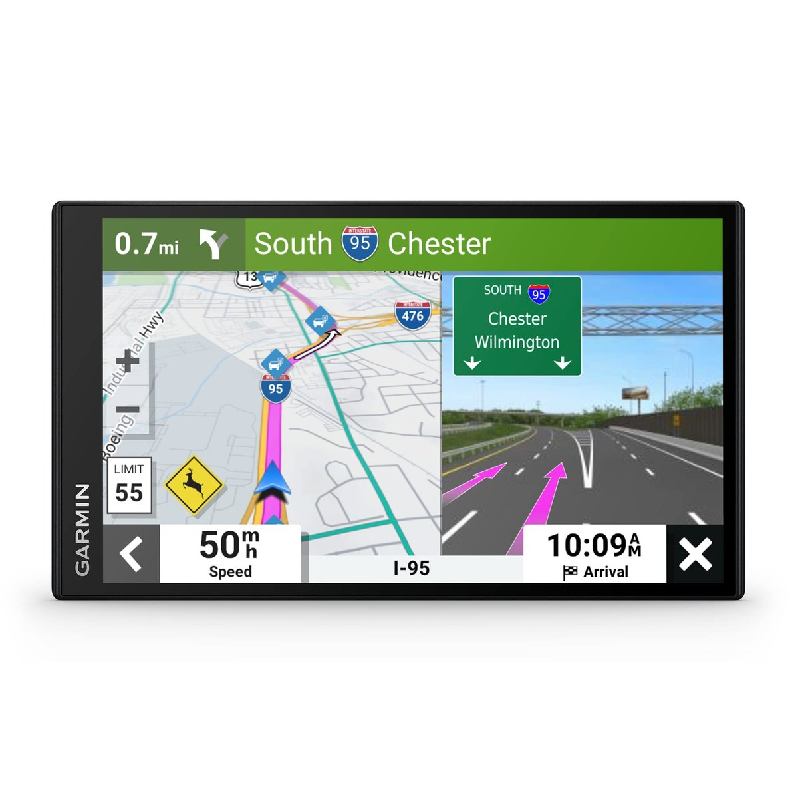
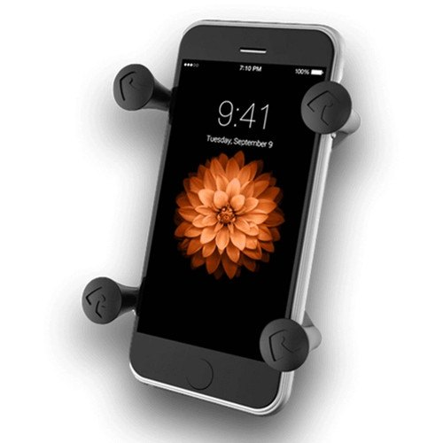

Best Overlanding GPS and Navigation Devices 2026
When we set out on a three‑month trek across the Rocky Mountains, the deserts of Utah, and the backroads of the Pacific Northwest, reliable navigation was the difference between a smooth adventure and a night spent under a tarp with a dead battery. Over the past year we tested a wide range of handhelds, satellite messengers, and smartphone mounts in everything from high‑altitude passes to deep‑dirt trails. Below is the distilled result of our field trials – the devices that proved rock‑solid, intuitive, and worth every dollar for the modern overlander.
Key Features to Prioritize
Before we dive into the individual recommendations, here’s what we found most critical for overlanding navigation:
- Satellite connectivity: Cellular dead zones are common; devices that can fall back to satellite keep you on track.
- Rugged durability: IPX7 water resistance and MIL‑STD‑810G certification survive rain, dust, and the occasional tumble.
- Mapping flexibility: Pre‑loaded topo maps, downloadable USGS layers, and the ability to add custom waypoints are essential.
- Two‑way communication: A built‑in SOS button or messaging lets you call for help without a phone signal.
- Battery life: Overlanders often run for days without a charge; look for devices that can last 24+ hours in continuous use.
Compare the Top Picks
Review each product section for current Amazon availability and offer details.
| Product | Key spec(s) | Review |
|---|---|---|
| Garmin GPSMAP 66i | Two-way satellite messaging | See pick |
| Garmin inReach Mini 2 | Compact satellite communicator | See pick |
| Garmin Montana 750i | Large-screen GPS and satellite messaging | See pick |
| onX Offroad App | Offline trail mapping | See pick |
| SPOT Gen4 | Satellite SOS and tracking | See pick |
| Garmin DriveSmart 76 | On-road GPS with lane assistance | See pick |
| Ram X-Grip Phone Mount | Adjustable smartphone mount | See pick |
Our Top Picks

Garmin GPSMAP 66i
The GPSMAP 66i blends full‑color mapping with two‑way satellite messaging, making it a workhorse for remote expeditions.
Why We Like It
- Built‑in Iridium satellite network provides global SOS and text messaging even out of cellular range.
- 4.3‑inch sunlight‑readable display with pre‑loaded TopoActive maps and support for custom TOPO maps.
- Up to 35 hours of battery life in GPS mode; optional power pack extends runtime to 100+ hours.

Garmin inReach Mini 2
This pocket‑sized satellite communicator is the ultimate backup for any overland rig, delivering two‑way texting and tracking in a 2.5‑inch form factor.
Why We Like It
- Compact size fits in a glove compartment or on a bike handlebar.
- Up to 100 hours of battery life in tracking mode; rechargeable Li‑ion battery.
- Global SOS button connects directly to 24/7 monitoring centers.

Garmin Montana 750i
The Montana 750i is a rugged, 7‑inch tablet‑class GPS that doubles as a satellite communicator, perfect for base‑camp setups.
Why We Like It
- 7‑inch sunlight‑readable display with built‑in Wi‑Fi for map updates on the road.
- Integrated inReach technology for SOS, two‑way messaging, and location sharing.
- Durable chassis meets MIL‑STD‑810G standards; water resistant to 10 m.

onX Offroad App
onX Offroad isn’t a hardware device but a subscription‑based app that transforms any smartphone into a powerful trail navigation system.
Why We Like It
- Access to over 30,000 curated off‑road trails with detailed waypoints and user reviews.
- Offline maps download for use in cellular dead zones.
- Community‑driven alerts for trail conditions, hazards, and points of interest.

SPOT Gen4
SPOT’s Gen4 satellite messenger offers a simple, no‑frills SOS and tracking solution for budget‑conscious adventurers.
Why We Like It
- One‑button SOS connects to a 24/7 monitoring center.
- Customizable check‑in intervals (as short as 5 minutes) for real‑time tracking.
- Long battery life – up to 12 days in tracking mode.

Garmin DriveSmart 76
The DriveSmart 76 is a 7‑inch dash‑mounted GPS designed for on‑road navigation but useful for overlanders who spend significant time on highways.
Why We Like It
- Live Traffic and lane‑assist features help navigate busy interstates.
- Built‑in Bluetooth for hands‑free calls and music streaming.
- Easy mount system compatible with most vehicle dashboards.

Ram X-Grip Phone Mount
A sturdy, adjustable mount that secures any smartphone to the windshield, turning your phone (and the onX Offroad App) into a reliable navigation display.
Why We Like It
- Universal clamp fits most phone sizes, including rugged cases.
- Strong suction cup with a built‑in release lever for quick removal.
- 360° rotation for portrait or landscape viewing.
FAQ
Do I need a separate satellite messenger if I already have a Garmin GPS?
Many Garmin models (GPSMAP 66i, Montana 750i) include built‑in inReach technology, eliminating the need for an extra device. However, if you prefer a smaller, dedicated messenger, the inReach Mini 2 or SPOT Gen4 are excellent companions.
Can I use the onX Offroad App without a cellular signal?
Yes. The app allows you to download maps and waypoints for offline use. Once downloaded, you’ll have full navigation capability without cell service, though you won’t receive live updates or community alerts until you reconnect.
What’s the best way to mount a smartphone for navigation while off‑road?
The Ram X‑Grip Phone Mount offers a secure, adjustable solution that survives vibration, dust, and water exposure. Pair it with a rugged case and the onX Offroad App for a cost‑effective navigation setup.
Affiliate Disclosure: Some links in this article are affiliate links. If you make a purchase through these links, we may earn a small commission at no additional cost to you.